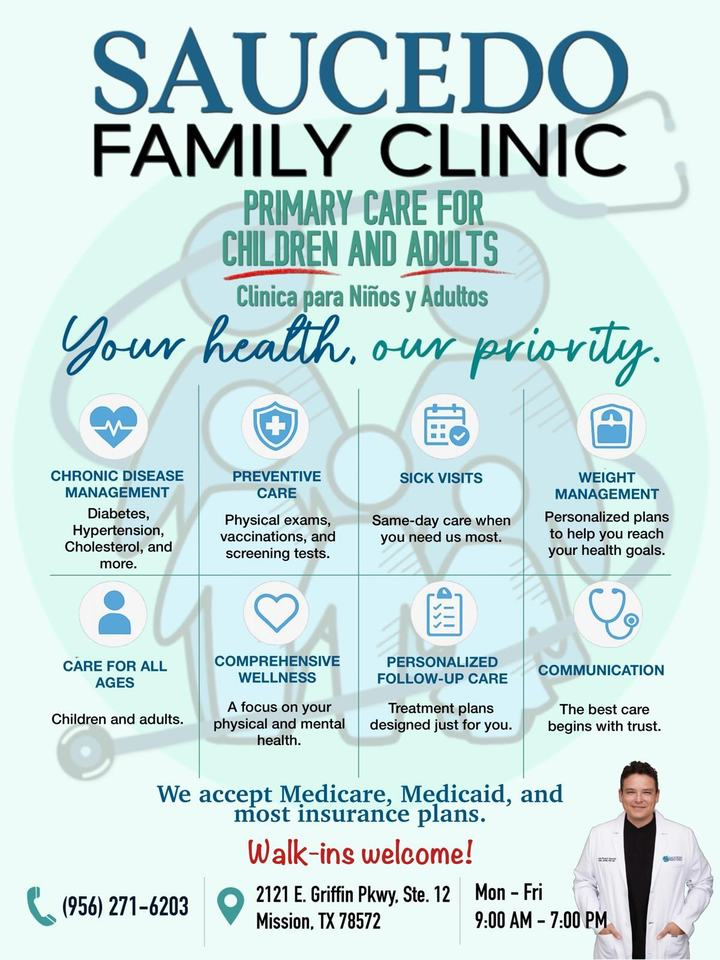

Consultas por enfermedad
Atención para síntomas inesperados como fiebre, tos, dolor de garganta, dolor de oído y otros malestares comunes.
Aceptando nuevos pacientes
¡Bienvenidos sin cita!
Atención primaria personalizada para niños y adultos en Mission, Texas. Ven cuando lo necesites o llámanos para programar tu visita.
$50 consulta para pacientes sin seguro (pago privado)
Servicios
Atención cercana y continua, desde una consulta por enfermedad hasta el seguimiento de tu salud a largo plazo.
Atención para síntomas inesperados como fiebre, tos, dolor de garganta, dolor de oído y otros malestares comunes.
Evaluaciones de rutina, chequeos de bienestar y orientación para mantener saludable a toda tu familia.
Atención continua y planes personalizados para ayudar a controlar condiciones de salud a largo plazo.
Seguimiento de tus niveles y ajustes a tu plan de cuidado según tus necesidades.
Evaluaciones para ayudar a que estudiantes y atletas comiencen sus actividades con confianza.
Vacuna contra la influenza (flu shot) y vacunación para niños y adultos según la edad, el historial y las recomendaciones médicas.
Programa de pérdida de peso con GLP-1 bajo supervisión médica, con evaluación personalizada de tu historial, metas y opciones de tratamiento.
Opciones accesibles para pacientes sin seguro. Llámanos para confirmar precios y disponibilidad.
Precios accesibles
¿Sin seguro? Recibe atención familiar de calidad. ¡Bienvenidos sin cita!
Llamar ahoraAyuda a tu estudiante a prepararse para su temporada. Llama para confirmar detalles y disponibilidad.
Llamar ahoraGalería
Conoce nuestros servicios, promociones y la atención que ofrecemos a niños y adultos.

Agendar cita
Elige la opción más fácil para ti. Puedes llamar o abrir un correo rápido para solicitar tu cita.
Para emergencias médicas, llama al 911. No incluyas información médica confidencial en correos.
Visítanos
| Lunes a viernes | 9:00 AM – 7:00 PM |
|---|---|
| Sábados | Según disponibilidad |
| Domingos | Cerrado |
Aceptamos pacientes nuevos. ¡Bienvenidos sin cita! Llámanos o envíanos un correo para confirmar disponibilidad.